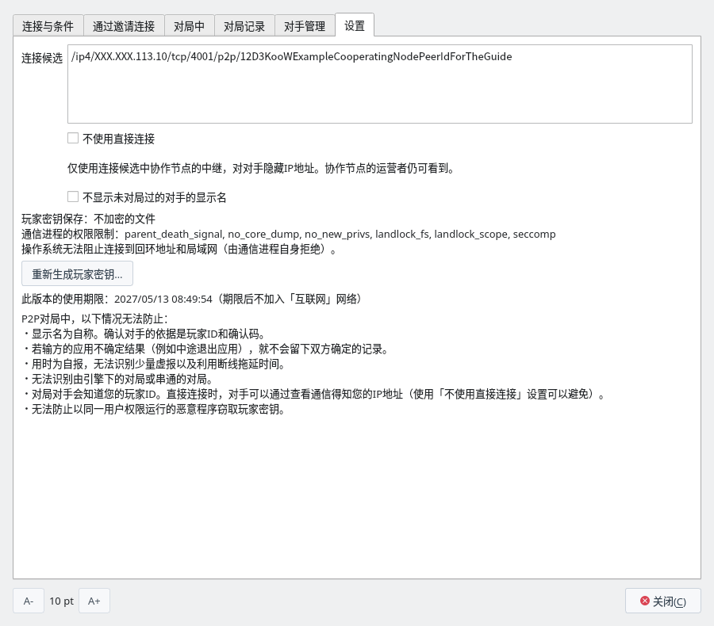
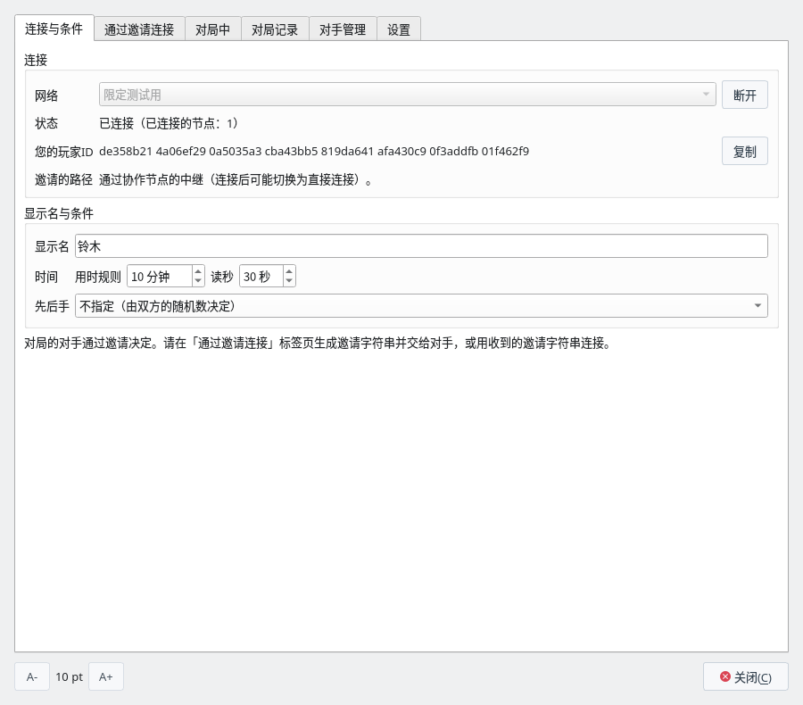
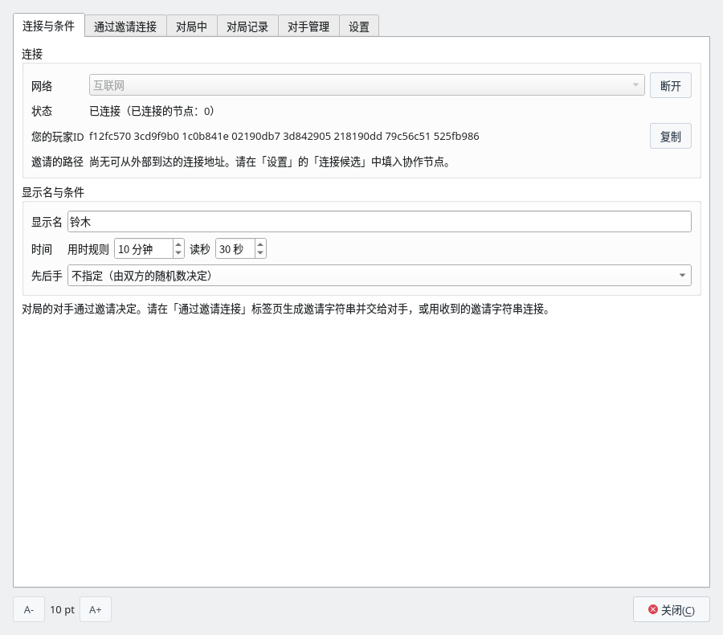
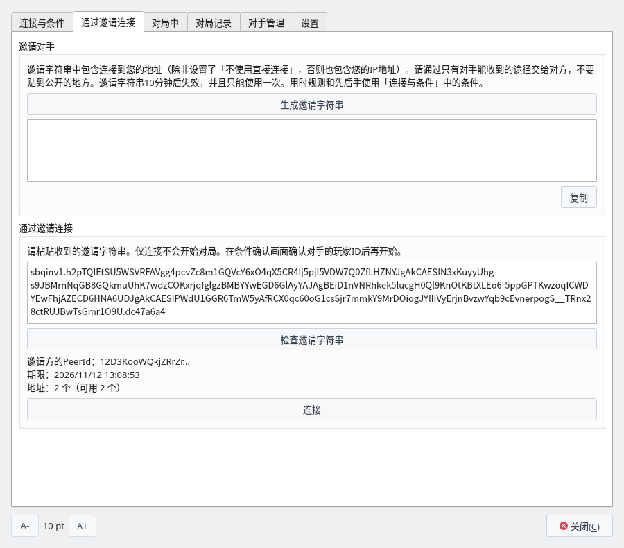
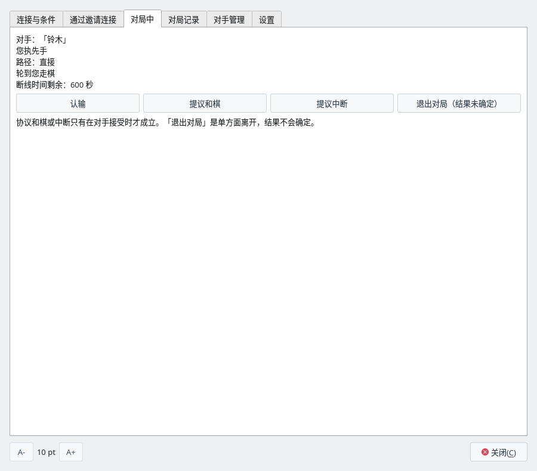
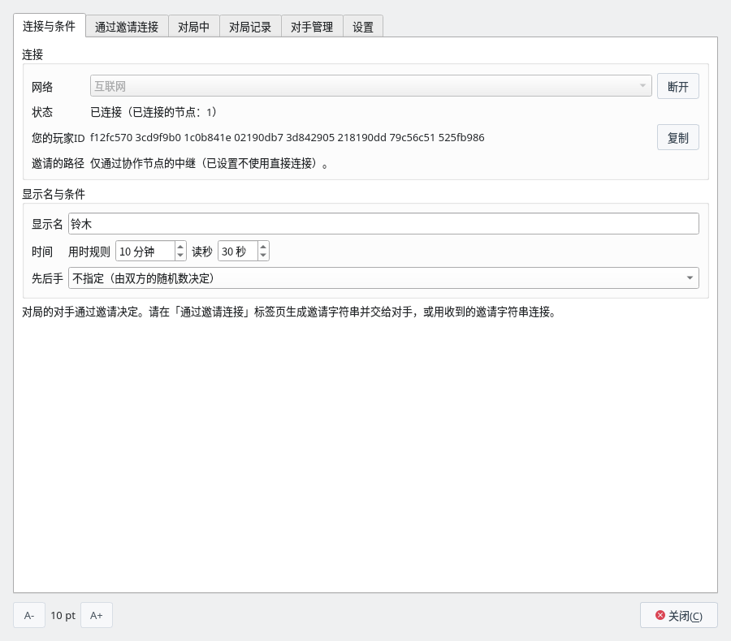

使用协作节点对局
在P2P对局（实验版）中，通过协作节点与互联网上的对手以邀请方式对局
P2P对局的准备（玩家密钥・显示名）、窗口和对局记录请参阅P2P对局（实验版）。与同一电脑・同一局域网的对手对局请参阅不使用协作节点对局。
什么是协作节点
在通过互联网的对局中，双方的应用最先连接的服务器
要通过互联网对局，必须在邀请字符串中放入对手的应用连接到您的电脑所用的地址。但是，家庭网络和手机网络的电脑大多在路由器内侧，电脑本身并不知道自己在互联网上以哪个地址被看到。来自外部的连接也可能被路由器拦下。P2P对局也没有寻找对手或互相告知地址的服务器。
因此，应用会先连接运行在互联网可以到达之处的“协作节点”，请它负责下面两件事。
- 可达性确认：请协作节点确认从互联网看到的这台电脑的地址，以及能否从外部到达该地址。如果能到达，就把这个地址放入邀请字符串，与对手直接连接。
- 中继：在协作节点上预约中继的席位，并把经由协作节点的地址也放入邀请字符串。无法从外部直接到达时（家庭网络大多如此），对手用这个地址经由协作节点连接。
不填协作节点就以“限定测试用”连接时，邀请字符串中一个地址也没有，对手无法连接。
- 做的事：只有可达性确认和中继。
- 不做的事：不判定着手和胜负，也不保存对局记录。中继的通信在双方的应用之间加密，因此它也读不到内容（着手、玩家ID、显示名）。
- 运营者能看到的：使用者的 IP 地址，以及哪些 IP 地址之间建立了连接。协作节点的程序不会把来源 IP 地址写入日志，但运营者检查通信就能知道。确认可达性时，只请协作节点逐个确认它看到的地址，不发送使用者在局域网内的地址。
由谁启动协作节点
一个协作节点就够了。由能准备互联网可达服务器的人启动，并把地址告诉对局的人
- 一个就够：对局的两人合起来只需要一个协作节点，不需要各自启动。
- 两人填入相同的地址：启动的人告知地址，两人都把它填入“设置”标签页的“连接候选”。邀请方没有填入时，邀请字符串中没有连接地址。使用“不使用直接连接”的人，必须与对手填入相同的协作节点。
- 多组共用：一个协作节点可以供许多组对局者使用（中继席位同时最多 128 人）。
- 应用中没有内置：应用中没有协作节点的地址，需要由对局的人自己准备。
协作节点由能准备互联网可达服务器的人启动。可以是对局两人中的一方，也可以是两人都认识的人。
| 启动的人 | 适合的情况 |
|---|---|
| 对局两人中的一方 | 拥有 VPS 等服务器，或能在家里的路由器上开放端口时 |
| 熟人（不参加对局的人） | 在研究会或社团中，由一人运行协作节点，全体成员共用其地址时 |
启动的人需要下面这些条件。
- 互联网可以到达的 IP 地址：拥有公网 IP 地址的服务器（VPS 等），或可以开放端口的家庭网络。手机网络，以及运营商叠加多层地址转换的网络（CGNAT）无法从外部到达，因此无法运行。
- Linux：协作节点的程序会先用 Landlock 和 seccomp 限制自己的权限再运行。在无法施加这些限制的环境中无法运行。
- 一个可以开放的 TCP 端口：本页的示例为 4001 号。
- 持续运行：两人对局期间请不要停止。通过中继下棋的对局会在协作节点停止时断开，如果 120 秒内无法重新连接，就会中断（结果未确定）。
运营者能看到使用者的 IP 地址。请事先告知使用者。
启动协作节点
把P2P对局的通信进程 shogiboardq-peer 作为协作节点运行
协作节点就是加上 --service 启动的P2P对局通信进程 shogiboardq-peer。启用P2P对局构建应用后，它会生成在与应用相同的文件夹中（安装后放在 bin 中）。
服务器上既不需要 Qt 也不需要显示器。只要有 Rust（1.85 以上）和 C 编译器，就可以只构建通信进程。
$ git clone https://github.com/hnakada123/ShogiBoardQ.git
$ cd ShogiBoardQ
$ cargo build --release --locked -p shogiboardq-peer
$ sudo install -m 755 target/release/shogiboardq-peer /usr/local/bin/$ shogiboardq-peer --service --relay --network sbq-limited-1 \
--identity ~/coop-node.key --listen /ip4/0.0.0.0/tcp/4001
shogiboardq-peer: service started as 12D3KooW…| 选项 | 含义 |
|---|---|
--service | 作为协作节点运行。 |
--relay | 负责中继。家庭网络之间的对局几乎都需要。 |
--network sbq-limited-1 | “限定测试用”的网络。应用的“限定测试用”会加入这个名称的网络。 |
--identity <文件> | 协作节点的身份密钥文件。不存在时会生成（只有所有者可以读写的权限）。只要一直使用同一个文件，PeerId 就不会变。删除后 PeerId 会变，需要重新告知地址。 |
--listen <地址> | 监听的地址和端口。0.0.0.0 表示在所有网络接口上监听。端口不一定是 4001。 |
启动后，service started as 后面会显示 PeerId。要停止时按 Ctrl+C。
协作节点没有使用期限（期限只在应用加入“限定测试用”时起作用）。
在服务器的防火墙中，允许到 --listen 中所写端口（TCP 4001 号）的连接。使用 VPS 时，还要在服务商管理界面的数据包过滤（安全组等）中允许。
# firewalld
$ sudo firewall-cmd --permanent --add-port=4001/tcp
$ sudo firewall-cmd --reload
# ufw
$ sudo ufw allow 4001/tcp在家里的电脑上运行时，要在路由器上把该端口转发到这台电脑（端口转发）。家里的公网 IP 地址变化后，协作节点的地址也会变。另外，要从同一个家里的电脑使用这个协作节点，路由器必须支持回到自己公网 IP 地址的连接（NAT 回环），因为“限定测试用”不会连接局域网内地址的协作节点。
协作节点的地址是下面的形式。PeerId 是启动时 service started as 后面显示的字符串。
/ip4/<服务器的公网IP地址>/tcp/4001/p2p/<PeerId>请用 IP 地址书写（不能使用域名）。把这个地址告诉对局的人。
可以在应用中确认它是否在运行。把地址填入“连接候选”并以“限定测试用”连接，如果节点数变为 1 以上，并且“邀请的路径”中显示“通过协作节点的中继（…）。”或“直接连接（也可使用协作节点的中继）。”，就说明协作节点和中继可以使用。
要在服务器上持续运行，可以做成 systemd 服务，服务器重启后也会自动启动。用下面的内容创建 /etc/systemd/system/sbq-coop-node.service（身份密钥放在 /var/lib/sbq-coop-node）。
[Unit]
Description=ShogiBoardQ P2P cooperating node
After=network-online.target
Wants=network-online.target
[Service]
DynamicUser=yes
StateDirectory=sbq-coop-node
ExecStart=/usr/local/bin/shogiboardq-peer --service --relay --network sbq-limited-1 \
--identity /var/lib/sbq-coop-node/coop-node.key --listen /ip4/0.0.0.0/tcp/4001
Restart=on-failure
[Install]
WantedBy=multi-user.target$ sudo systemctl enable --now sbq-coop-node
$ journalctl -u sbq-coop-node # 确认 PeerId对局双方的准备
双方都填入相同的协作节点，并以“限定测试用”连接
第一次使用时，生成玩家密钥并填入显示名（准备）。
在“设置”标签页的“连接候选”中，每行填入一个对方告知的协作节点地址（最多 16 个）。填入多个时，即使其中一个停止，也能使用其他协作节点。“连接候选”从下次连接时起生效（连接中更改时，请断开后重新连接）。


“设置”标签页：在“连接候选”中填入协作节点后（地址的一部分已隐藏）
在“连接与条件”标签页中把“网络”设为“限定测试用”，点击“连接”。连接到协作节点并预约到中继后，“邀请的路径”中会显示“通过协作节点的中继（连接后可能切换为直接连接）。”。预约可能需要一点时间。


连接到协作节点后
不填协作节点就连接时，不会连接到任何地方（“已连接（已连接的节点：0）”），“邀请的路径”中显示“尚无可从外部到达的连接地址。…”。在这种状态下生成的邀请字符串中没有连接地址，“生成邀请字符串”下方会显示“此邀请字符串中没有连接地址，对手无法连接。…”。


不填协作节点就连接后
邀请并对局
交换邀请字符串的方式与不使用协作节点的对局相同
邀请方在“通过邀请连接”标签页中用“生成邀请字符串”生成邀请字符串，通过只能送达对方的方式交给对方，对方点击“检查邀请字符串”。“地址：N 个（可用 N 个）”中可用的地址有 1 个以上，就可以用“连接”连接。之后的条件确认画面和对局，与不使用协作节点的对局相同。
邀请字符串中放入经由协作节点的地址（如果邀请方的电脑可以从外部直接到达，还会放入那台电脑的 IP 地址）。请不要贴在公开的地方。
一个邀请字符串只能让一个人连接一次，10 分钟后失效。同时有效的最多 4 个，一次只能下一局（详见可以邀请的人数与次数）。


被邀请方：检查收到的邀请字符串后
对手首先经由协作节点的中继连接。连接后，双方的应用会立即尝试穿过各自的路由器直接连接（打洞）。成功后，“对局中”标签页的“路径”会变为“直接”（多数在对局开始前完成）。
在每次连接都改变源端口的路由器后面，或在手机网络这类多层地址转换的线路上，无法直接连接，会一直以“中继”对局。通过中继也可以对局，但着手要绕经协作节点送达，可能会稍有延迟。ShogiBoardQ 的协作节点每条中继 30 分钟后会断开，因此长时间的对局中途可能会自动重新连接（“正在重新连接”）。



“路径：直接”：经由中继连接后切换为直接连接时
本页的截图是在 Docker 中的虚拟网络上重现协作节点和家庭路由器（NAT），用两个应用实际对局拍摄的。“中继”的截图使用了每次连接都改变源端口的路由器。
不让对手看到 IP 地址对局
使用“不使用直接连接”后，对手只能看到协作节点的地址
通常，对手的应用和您的电脑会直接连接（只有无法直接连接时才使用协作节点的中继）。直接连接后，对手检查通信就能知道您在互联网上的 IP 地址（画面上不显示）。从 IP 地址有时能知道大致的地区和所用网络的运营商。邀请字符串中也会放入您的 IP 地址。
在“设置”标签页中勾选“不使用直接连接”后，与对手一定经由协作节点的中继连接，邀请字符串中也只放入经由协作节点的地址。对手只能看到协作节点的地址，能看到您 IP 地址的只有您填入“连接候选”的协作节点的运营者。与互联网上不太了解的对手下棋时使用。
- 需要协作节点：请在“连接候选”中填入可以中继的协作节点。没有填入时，“邀请的路径”中显示“无法使用中继。…”，即使邀请，对手也无法连接。
- 与对手相同的协作节点：在此设置下用收到的邀请字符串连接时，只连接经由您所填协作节点的地址。邀请方也必须在“连接候选”中填入相同的协作节点（不同时会显示“此邀请字符串中没有通过您的协作节点中继的连接地址。…”）。
- 一直中继：不尝试直接连接，因此对局期间“路径”一直是“中继”。着手绕经协作节点送达，可能比直接连接稍有延迟，长时间的对局中途可能会自动重新连接（“正在重新连接”）。
此设置从下次连接时起生效。连接后，“邀请的路径”中显示“仅通过协作节点的中继（已设置不使用直接连接）。”。


以“不使用直接连接”连接后
无法连接时・使用期限
根据画面上显示的消息，就能知道要检查什么
| 显示的消息・状态 | 要检查的内容 |
|---|---|
| 一直是“已连接（已连接的节点：0）” | “连接候选”的地址有误、协作节点已停止、服务器的防火墙未开放，三者之一。地址请用 IP 地址书写（不能使用域名和局域网内的地址）。 |
| “邀请的路径”中显示“尚无可从外部到达的连接地址。…” | 还没有连接到协作节点，或还没有预约到中继。稍等后仍无变化，请检查上一行。 |
| “邀请的路径”中显示“无法使用中继。…” | 设置了“不使用直接连接”，但“连接候选”中没有可以中继的协作节点。还要确认协作节点是否加上 --relay 启动。 |
| “此邀请字符串中没有通过您的协作节点中继的连接地址。…” | 设置了“不使用直接连接”，且与邀请方的协作节点不同。请填入相同的协作节点。 |
| “这是其他网络的邀请字符串。” | 两人的“网络”不同。两人都以“限定测试用”连接。 |
| “此版本已过使用期限，无法加入限定测试网络。…” | 这是已过使用期限的版本（下面的 2）。 |
可以加入“限定测试用”的期限是从构建应用之日起 180 天（显示在“设置”标签页的“此版本的使用期限”中）。P2P对局没有可以停止旧版本的服务器，因此这样做是为了不让未修复缺陷或安全漏洞的旧版本一直留在网络中。过期后，请重新构建新版本。
只有应用的“限定测试用”有期限。协作节点、“本地验证用”的对局，以及查看和验证已保存的记录都没有期限。